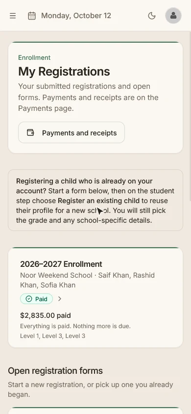
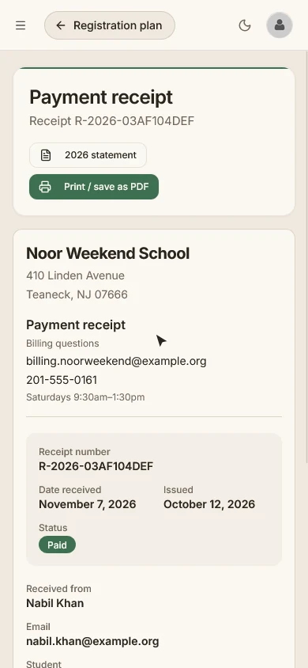

Features
Everything your office does.
One calm place.
Maktab was built by people who ran the registration rush, matched payments to spreadsheets on Sunday night and answered the same parent question forty times. Here is every part of it, with real screens and demo school data.
Registration and admissions
Every child.
One sitting.
A parent signs in once and registers every child in the same flow, from a phone or a laptop. Each grade shows whether it is open before they start, so nobody fills in a form for a seat that doesn't exist.
- Grades marked Open, Waitlist only or Closed on the form
- Your school's own questions for each child
- Sibling discounts applied from your school's policy
- Saved drafts at each step, then one family submission
- The price is fixed once a family submits, even if fees change later
- Capacity, waitlists and staff review of every application
- Registration invitations for families you want to bring in
- Withdrawal requests that your staff approve or decline

Tuition and payments
Every dollar.
One family ledger.
Registration and payments are connected, so an application leads straight to the family's balance. Your treasurer sees every payment, every method and every family in one place.
Families pay the way they can
Pay in full, pay the minimum now, choose a monthly plan of up to 12 installments, or pay any amount toward the balance. By card or from a bank account through Stripe's hosted checkout.
Your office records the rest
Record cash, checks, Zelle and other payments received outside checkout in about ten seconds, with an emailed receipt. Give financial aid, forgive a balance or issue a refund. Refunds and withdrawals never carry a surcharge.
Nothing waits for someone to remember
Failed payments and duplicate payment plans land in one Needs attention queue, next to the notes your team flags for follow-up. Search by name, receipt number or amount, and export to CSV.
Follow-up that happens on its own
Families who still owe get a reminder at most once a week, four times. The last one gives them your billing contact and hours. There are no late fees or surcharges.
Receipts and year-end statements
Every payment has a receipt, and every family has a year-end statement with your school's letterhead and billing contact. Print or save as PDF from the browser.
A ledger that stays right
Every 15 minutes Maktab checks its records against Stripe, so a missed notification can't leave a family's balance wrong.

For families
Everything a family needs,
on one page.
Parents see what is due, what is paid and what comes next for every child. Each child has a page with attendance by school day, grades and published report cards, documents, the school calendar and a privacy page.
- Family dashboard with due now, next charge and action items
- Plan progress and self-service billing
- Receipts and a year-end statement for every year
- Upload documents the school asks for
- Keep medical details and emergency contacts current
Returning families and year-end
Next year,
without starting over.
The part every admin dreads is the part Maktab does best. Invite your returning families, hold their seats, then move the whole school into the new year with decisions you can see and change.
Invitations with seats held
Every returning family gets an invitation. Their seat is held until your reply-by date, and they confirm all their children on one page with details already filled in.
Fair rules, applied for you
Families with an overdue balance are asked to settle it before they re-enroll. Families on a payment plan are never blocked.
Rollover with explicit decisions
Every student is marked promote, retain, graduate or leaving. Change the exceptions, confirm, and the new year becomes current. Rollover runs only after the school year has ended.
Student records
A child's record,
handled with care.
One record for each student follows them from year to year, with the family, emergency contacts, medical details, notes and private documents in one place.
- Student directory with family relationships
- Medical information and emergency contacts
- A read-only Safety card for teachers: allergies, medications and who to call
- Private document upload with staff review
- Rejected documents explain why, and the parent can replace them
- Withdrawing a student keeps the record
- No student photos, by design
Academics
Registration is the beginning.
The school year is the rest.
Classes, schedules, attendance, grades and report cards live next to the registrations and payments, so the people who teach and the people who run the office work from the same record.
School years and calendar
School years with marking periods, a school calendar with holiday closures, and grades with sections that know which grade comes next.
Classes and timetable
Classes and rosters with bulk setup, a rotating weekly timetable and a conflict review. Copy curriculum and schedule from another year.
Attendance
Class and period attendance taken by teachers, and attendance by school day on each child's page for parents.
Gradebook
Assignments, categories and a grading grid, with co-teachers grading together, grade scales and subject comments.
Report cards and transcripts
Generate and publish report cards, print them from the browser, and correct them with version history. Transcripts come from published academic history.
A home for teachers
Teachers see today's classes, what needs grading and which students to check in on, and nothing they don't need.
Privacy and FERPA
A child's record
is not a spreadsheet row.
Maktab gives your school the safeguards and workflows to meet its own FERPA obligations. Every read of a student's record in the app is logged, in a log that can't be edited, and kept for three years.
- Answer "who looked at this child's file?" in seconds
- A privacy page for each child, for parents
- Records requests with deadlines, a disclosure record and restrictions
- Annual notice and directory-information opt-out
- Your IT admin must give a reason before opening a record, and the school sees it
- The people who built Maktab have no login to your school's data
Dashboards and roles
The right view
for every person.
Directors, principals, teachers and parents each get their own dashboard and navigation, with the next action on top.
Staff sign in with Google
Staff sign in with your school's Google Workspace accounts. Parents use an email and password, with a reset if they forget it.
Roles that fit a school
Directors, school admins, teachers and parents, with clear rules about who may grant which role and a history of sign-ins.
25 automatic emails
Receipts, reminders, invitations, document requests and more go out on their own, with your school's name on them.
Tested before it reached you.
Before we handed Maktab to a school, we wrote the test plan and checked it against a real school's data.
- 80+
- screens
- 3,000+
- automated tests
- 261
- workflows in 36 QA documents
- 1,467
- edge cases tested
See it with your
school's own details.
Tell us a little about your school and we'll walk you through how Maktab would fit, using your own setup.